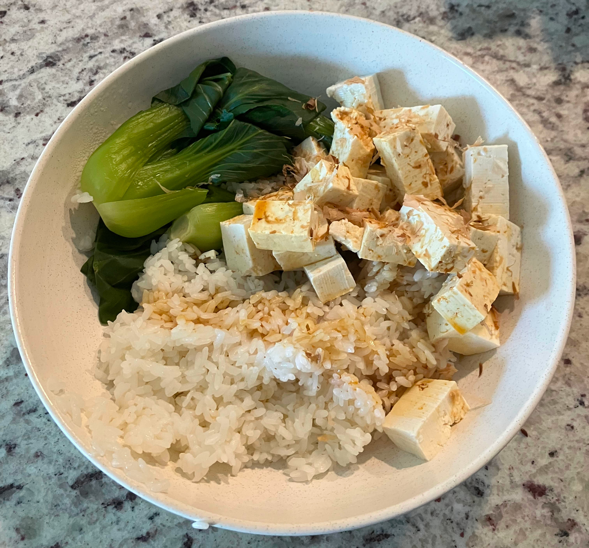

Tofu, Rice & Veggies

Return to Recipes
Description
This healthy meal is a mix of tofu, rice, and your choice of veggies. For me, I enjoy adding steamed bok choy to the bowl. The sauce mixture also really adds flavor.
Ingredients
- 1 Block of Tofu
- 150ml of Rice
- 2-3 pieces of Bok choy
- Benito flakes
- 3 tbsp Soy sauce
- 1-2 tsp Sesame oil
- 1 tsp Rice vinegar
Steps
- Boil your tofu in a pot of water.
- Prepare your rice the way you like it.
- In a small bowl mix the rice vinegar, sesame oil, and soy sauce together.
- Steam your choice of vegetables.
- Throw the rice, tofu and vegetables into a bowl and sprinkle with bonito flakes.
- Use the sauce as a dipping sauce for your tofu, rice and veggies or dump it ontop if you prefer.